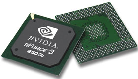
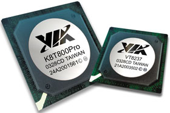

Олег Денисов, Константин Яковлев
Некоторая растерянность пользователей в отношении выбора платформы для построения высокопроизводительных ПК широкого профиля на базе процессоров AMD постепенно уходит в прошлое. Обещанная миграция 64-разрядных процессоров AMD на единую платформу наконец состоялась - это произошло 1 июня, в канун открытия Computex 2004, ежегодно проходящего в столице Тайваня Тайбэе. Сразу четыре новых процессора - Athlon 64 с индексами 3500+, 3700+ и 3800+ и Athlon 64 FX-53 - покинули свои гнезда (Socket 754 и Socket 940 соответственно), отдав предпочтение унифицированному Socket 939. Стоит отметить, что перехода на единый разъем ожидали не только пользователи, но и производители системных плат. Короткий модельный ряд процессоров Athlon 64 FX и их высокая цена предопределили весьма ограниченный список компаний, решившихся начать производство плат для платформы Socket 940.
Неудивительно, что среди смельчаков, приступивших к выполнению заказов, оказались по сути лишь компании из первой пятерки. Как нам представляется, собственно, и заказов было не слишком-то много, поскольку базовый комплект процессор - модули ОЗУ (Athlon 64 FX-53 и пара регистровых модулей памяти DDR400 SDRAM DIMM с коррекцией ошибок) в ту пору обходился пользователям в копеечку. Напомним, что на момент анонса в сентябре прошлого года процессоров семейства FX цена комплекта достигала 1000-1200 долл. Чтобы решиться выпускать платы для весьма специфичного сегмента рынка, которые может оказаться не слишком просто продавать, необходимы, как минимум, солидный базовый капитал и развитая сеть партнеров, готовых поддержать это начинание. Время показало, что партнеры гораздо охотнее доводили до масс более экономичные решения, основу которых составляли процессоры Athlon 64 и типовые модули DDR SDRAM.
На тот момент все продукты под Socket 754 проектировались на базе НМС Nvidia nForce3 150 и Via K8T800, а для систем на базе Athlon 64 FX предназначался набор nForce3 Pro 150 и все тот же K8T800 в модификации под Socket 940. Основные различия между платформами касались организации работы системной памяти, пропускной способности магистрали HyperTransport, вариантов реализации встроенных интерфейсов и дополнительных сервисных функций. Примерно год спустя актуальность перечисленных характеристик, составляющих основу архитектуры НМС для Athlon 64/64 FX, вновь подтвердили постоянные партнеры AMD - компании Nvidia и Via, выпустив наборы системной логики nForce3 250Gb и K8T800 Pro. Универсальность этих наборов заключается в том, что еще на этапе их проектирования уже предусматривалась возможность предстоящего перехода на единую платформу Socket 939 без дополнительных затрат на новую "перегруппировку сил". В настоящий момент оба набора присутствуют на рынке в двух исполнениях, причем время жизни версии для Socket 754, по всей видимости, будет ограничено общей массой еще не реализованных процессоров для этого разъема.
|  |  |
| НМС Nvidia nForce3 250Gb (слева) и Via K8T800 Pro.
|
|
Что касается новых процессоров, объявленных в начале июня, и специально разработанного для них унифицированного Socket 939, похоже, им удастся избежать трудностей, выпавших на долю старшего поколения 64-разрядных процессоров Advanced Micro Devices. Порукой тому и переработанный 128-разрядный контроллер памяти, встроенный в ядро процессора, и возросшая до 2 ГГц суммарная тактовая частота транспортной магистрали (пропускная способность шины до 8 Гбайт/с). Не отстают и НМС, предлагая такие дополнительные функции, как встроенный Gigabit Ethernet, реализованный на аппаратном уровне межсетевой экран, расширенные возможности организации дисковой подсистемы на базе RAID-массивов и новый уровень мультимедийных функций, раздвигающий привычные границы применения настольных ПК. Часть из них уже воплощена в "железе", другая еще ждет своего часа. Что из этого получится, нам еще предстоит выяснить, а пока мы предлагаем читателям результаты тестирования двух десятков системных плат для процессоров AMD из числа тех, что доступны на рынке здесь и сейчас (в первой части обзора рассматриваются платы на базе НМС от Via Technologies; продукты на базе НМС Nvidia будут обсуждаться в следующем номере). Характеристики протестированных плат и полные результаты тестирования приведены здесь.
Методика тестированияПроцесс тестирования системных плат для процессоров AMD был организован в несколько этапов. Каждая система проходила заданный цикл испытаний с применением специализированных синтетических тестов и фирменных тестов Ziff-Davis, с целью определить быстродействие и устойчивость платформы при выполнении типовых операций в офисных и мультимедийных приложениях. Первую группу представляли тесты на базе пакета Sandra 2004 Standard Version (сборка 2.9.104) компании SiSoftware, позволяющие оценить производительность процессора и ОЗУ в составе выбранной платформы. С помощью тестовых пакетов PCMark04 и 3DMark03 компании Futuremark (сборки 1.2.0 и 3.4.0 соответственно) определяли эффективность использования ресурсов ОЗУ, быстродействие процессора, дисковой и видеоподсистем в составе платформы, а также интегральную оценку производительности системы в 2D/3D-приложениях под управлением API DirectX 9.0b (экранное разрешение 1024 x 768, 32-разрядная глубина цвета, параметр вертикальной синхронизации Vsync = Auto). Быстродействие при выполнении офисных приложений, задач формирования Web-контента и устойчивость системы при работе в мультизадачной среде исследовались с помощью пакетов PC Magazine Business Winstone 2004 v1.01 и PC Magazine Content Creation Winstone 2004 v1.0.1 - фирменного набора тестов журнала PC Magazine, разработанных корпорацией Ziff Davis Media в сотрудничестве с компанией VeriTest. Кроме того, для оценки запаса прочности доступными средствами мы принудительно увеличивали частоту системной шины до значения 210 МГц, после чего еще раз прогоняли оба фирменных теста PC Magazine, по итогам которых и делали заключение об устойчивости системы в стрессовых ситуациях. Тестовые испытания проводились под управлением ОС Microsoft Windows XP Professional (сборка 2600, с подключенным обновлением Service Pack 1, файловая система NTFS), установленной на жестком диске Seagate Barracuda ATA V ST3120023A емкостью 120 Гбайт. Для каждой системной платы с сайта производителя загружалась последняя версия BIOS с последующим обновлением микрокода, подключались "свежие" драйверы для соответствующих наборов системной логики, драйвер графической платы nVIDIA Detonator 56.72 и библиотека API DirectX 9.0b. Производительность и устойчивость систем на базе процессоров AMD изучались с помощью Athlon 64 3400+ (разъем Socket 754, ядро ClawHammer, тактовая частота 2,2 ГГц; встроенная кэш-память L2 1 Мбайт; частота шины HTT 200 МГц) и AMD Athlon 64 FX-53 (разъем Socket 940, ядро SledgeHammer, тактовая частота 2,4 ГГц; встроенная кэш-память L2 1 Мбайт; частота шины HTT 200 МГц). В системы на базе AMD Athlon 64 (разъем Socket 754) устанавливались два 184-контактных DIMM-модуля ОЗУ HyperX KHX3200/512 PC3200 DDR SDRAM объемом 512 Мбайт каждый производства компании Kingston Technology (латентность сигнала CAS - 2, тайминг 2-3-2-6, напряжение питания 2,6 В). Для тестирования платформ на базе AMD Athlon 64 FX (разъем Socket 940) применялись два 184-контактных DIMM-модуля ОЗУ Kingston KVR400X72RC3A/512 PC3200 Registered CL3 ECC объемом 512 Мбайт каждый (латентность сигнала CAS - 3, напряжение питания 2,6 В). Во всех случаях видеоподсистема была представлена графическим адаптером на базе nVIDIA GeForceFX 5700 Ultra c объемом видеопамяти 128 Мбайт. Заявленные производителями значения основных характеристик процессоров, ОЗУ и системных плат сверялись с реальными с помощью утилиты диагностики CPU Z (текущая версия 1.23 доступна для загрузки по адресу http://www.cpuid.com). |
ABIT KV8 Pro
Продукт компании ABIT выполнен на новейшем НМС Via K8T800 Pro и адресован в первую очередь энтузиастам компьютерных игр и развлечений. Для этих целей, по мнению разработчиков, вполне достаточно 2 Гбайт системной памяти DDR400 (два 184-контактных DIMM-разъема), пяти портов для PCI-плат расширений и восьми портов USB 2.0. Организовать дисковый RAID-массив в случае необходимости можно средствами контроллера Serial ATA, встроенного в микросхему южного моста Via VT8237, а связь с внешним миром поможет установить микросхема сетевого контроллера Via VT6122 10/100/1000Base-T PCI.
Современную мультимедийную станцию сегодня трудно представить без качественной звуковой составляющей. У модели KV8 Pro эта миссия возложена на звуковой контроллер Realtek ALC658, обеспечивающий представление сигнала на выходе аудиосистемы в формате 5.1. В результате с помощью шестиканальной акустической системы можно ощутить себя участником событий очередного DVD-блокбастера и обеспечить пространственное позиционирование звука в играх. Отличительная особенность этой платы - полный набор разъемов для подключения внешних источников сигнала, включая цифровые оптические "вход" и "выход" S/PDIF, расположенные на месте одного из последовательных портов. Сгруппировав их в районе панели ввода-вывода (жесткая распайка непосредственно на плате), производитель одновременно "закрыл" вопрос прокладки отдельных кабелей внутри системного блока.
Опыта проектирования плат, подобных KV8 Pro, инженерам ABIT не занимать. Учитывая запросы пользователей, любящих периодически "щекотать нервы" своего ПК, разработчики снабдили модель программно-аппаратным комплексом ABIT <мю>Guru. В него входят собственно ASIC <мю>Guru, размещенная на самой плате, специальный раздел BIOS <мю>Guru Utility и программная оболочка ABIT OC Guru, информирующая пользователя о текущих параметрах системы, включая частоты встроенного тактового генератора, процессора, шин AGP и PCI, напряжения питания основных компонентов и состояние аудиоподсистемы. На этапе знакомства с возможностями OC Guru предлагает воспользоваться тремя встроенными профилями Turbo, Normal или Quiet, загрузив которые, можно оценить эффект от действий машинного "гуру" на реальных приложениях. Если этого окажется недостаточно, новоиспеченный "гурман" от оверклокинга вправе создать еще три собственных профиля, назначая им определенные сценарии для конкретных приложений. Безусловно, такие манипуляции могут вызвать стресс не только у окружающих. Сберечь "нервные окончания" системной платы в этом случае помогут микросхемы мониторинга и аварийного отключения цепей питания процессора CPU ThermalGuard и резидентная программа ABIT EQ, отчасти напомнившая нам аналогичную утилиту, поставляемую вместе с микросхемой Winbond W83627HF. Собственно, ее и два семисегментных светодиодных цифровых индикатора, отвечающих соответственно за мониторинг и диагностику процедуры POST, мы и обнаружили на плате.
Конструктив KV8 Pro достаточно стандартен. Единственная особенность, которую мы отметили, касается расположения IDE-разъемов для подключения жестких дисков Ultra ATA 133. Соединение шлейфов с сигнальными контактами происходит не сверху, перпендикулярно PCB, а сбоку, в направлении портов PCI. Это решение, весьма типичное для серверных платформ, вполне оправданно в тех случаях, когда предполагается установка в систему дополнительных полноформатных плат расширений. Кроме того, при таком варианте соединений улучшается естественная циркуляция воздуха внутри корпуса. Если же пользователь сочтет нужным увеличить мощность приточно-вытяжной вентиляции, для этих целей предусмотрены три дополнительных разъема с возможностью мониторинга подключаемых систем охлаждения.
Благодаря более совершенной архитектуре плата продемонстрировала ряд очень высоких результатов. По нашим наблюдениям, особенно ей удавались манипуляции с мультимедийным контентом из пакета PC Magazine Content Creation. Показатели KV8 Pro при выполнении операций с плавающей запятой и скорость выполнения инструкций с расширенным набором команд вполне объясняют успех платы.
Albatron K8X800 Pro II
Модель K8X800 Pro II составила компанию еще пяти платам, "пострадавшим" от капризов контроллера памяти Athlon 64, который мы устанавливали во все системы на базе разъема Socket 754. В отличие от других образцов, в BIOS Setup этой платы можно в явном виде задать частоту, на которой будут работать модули ОЗУ (в нашем случае это DDR400 SDRAM). Примечательно, что в сводке характеристик, загружаемых при прохождении процедуры POST, на экране монитора высветилось значение DDR400, однако беспристрастная CPU Z отразила истинную картину, определив реальную частоту в 158,3 МГц. Кроме того, частота системной шины у этой модели по умолчанию составляла 201,4 МГц, что, согласитесь, не вполне корректно по отношению к другим участникам тестирования, честно выдерживавшим определенные спецификацией 200 МГц FSB.
Из приглянувшихся нам особенностей этой платы отметим, пожалуй, наличие микросхемы контроллера IEEE 1394 (два порта) и гигабитный LAN Ethernet-контроллер от 3Com. Особого упоминания заслуживает полупрофессиональная аудиоподсистема на базе восьмиканального звукового контроллера Via VT1720 Evny 24PT. С ее помощью не составит труда построить на базе ПК домашний кинотеатр, были бы дополнительные средства на приобретение соответствующей графической платы. В нагрузку к VT1720 прилагается выносная планка с набором разъемов для подключения различных источников аудиосигнала. Среди прочих выделим коаксиальные и оптические цифровые разъемы вход/выход S/PDIF.
Дизайн платы несколько отличается от типового. Разъем флоппи-дисковода размещен в нижней части платы, за последним, шестым разъемом PCI-плат расширений. Для его подключения придется изрядно потрудиться, чтобы не нарушать микроклимат, создаваемый естественной вентиляцией, и эстетический вид полностью собранной системы. Плата имеет неплохие возможности для наращивания системы, предоставляя пользователю шесть портов PCI и три DIMM-разъема для модулей ОЗУ. Система диагностики и мониторинга, помимо стандартных решений, представлена функциями BIOS Mirror и Voice Genie. Первая позволяет загрузить ПК в том случае, если микрокод основной BIOS выведен из строя. За вторым названием скрывается звуковой генератор голосовых команд, оповещающий пользователя о возможных проблемах в период прохождения процедуры POST.
Традиционно платы Albatron отличает очень продуманная иерархия и масса дополнительных функций BIOS Setup, которые дают опытным пользователям возможность тонкой настройки параметров, чтобы добиться оптимальной производительности и устойчивости системы. В этом смысле плата K8X800 Pro II не исключение. Проанализировав же результаты тестов, показанные этой моделью, можно с уверенностью сказать, что перед нами "крепкий середняк".
ASUSTeK K8V Deluxe

Те, кто внимательно следит за рынком портативных компьютеров, наверняка в курсе основных приоритетов, которым следуют проводимые в жизнь решения производителей. Одно из них - беспроводные технологии. Итак, в рамках инициативы WiFi Home компания ASUSTeK начала оснащать традиционные десктопы беспроводными сетевыми адаптерами, включив их в комплект поставки отдельных системных плат. Модель K8V Deluxe как раз из их числа.
Процедура подключения платы расширения ASUS WiFi-b не так сложна, как может показаться на первый взгляд. Беспроводной модуль устанавливается в специальный WiFi-разъем, расположенный сразу за последним, пятым разъемом PCI-плат расширений (в этом случае порт PCI становится для них недоступен). Закрепив планку изделия в корпусе ПК, остается подключить антенну к соответствующему разъему, расположенному на скобе, и приступить к инсталляции драйверов и ПО. Модуль руководствуется стандартом IEEE 802.11b, обеспечивая скорость передачи данных до 11 Мбит/с; дальность действия сигнала составляет до 30 м в помещениях и до 300 м на открытом пространстве. "Убойная сила" в 300 м для домашнего десктопа ни к чему, а вот 30 м, в контексте непреходящей актуальности жилищного вопроса, в самый раз. Программная точка доступа на базе компьютера, оснащенного системной платой K8V Deluxe и модулем WiFi-b, - уже реальность. Стоит добавить, что в планах ASUSTeK обозначены сроки начала поставок беспроводных модулей, которые будут работать на базе протокола IEEE 802.11g.
Оценивая архитектуру самой платы, выполненной на НМС Via K8T800 (микросхема южного моста VT8237, разъем Socket 754), следует отметить дополнительный двухканальный Serial ATA-контроллер Promise PDC20378, благодаря которому удвоилось общее число портов для подключения дисков с этим интерфейсом, и гигабитный LAN Ethernet-контроллер 3Com 3C940. Плата оснащена тремя разъемами для установки модулей ОЗУ без буферизации общим объемом до 3 Гбайт. Примечательно, что средствами BIOS в этой модели поддерживается функция коррекции ошибок памяти ECC. Завершают общую картину два порта интерфейса IEEE 1394 и шестиканальный аудиокодек (микросхемы VT 6307 и AD1980 SoundMAX компаний Via Technologies и Analog Devices соответственно).
Серьезных промахов в дизайне K8V Deluxe мы не обнаружили. Единственное неудобство может вызвать установка полноформатной платы в третий PCI-разъем при одновременном подключении к дополнительному IDE-каналу RAID-контроллера Promise PDC20378 жестких дисков Ultra ATA. Продукт ASUSTeK оснащен средствами мониторинга и диагностики основных функциональных узлов, включая технологию снижения тепловыделения процессора Athlon 64 - AMD Cool'n'Quiet, а микросхема BIOS находится под защитой функции ASUS CrashFree BIOS 2.
Оценить потенциал этой платы по результатам тестирования оказалось довольно просто. В отличие от конкурентов, не отличавшихся стабильностью, K8V Deluxe очень ровно прошла все испытания, неизменно оставаясь в тройке призеров. Вместе с платой ABIT KV8 Pro она разделила пальму первенства, показав лучший в своей категории результат в задачах формирования мультимедийного контента. Не было ей равной и в тестах на производительность дисковой подсистемы. Таким образом, очень грамотно распределив силы на длинном и тернистом пути тестового марафона, продукт ASUSTeK за счет стабильно высоких показателей и превосходной комплектации при оправданной цене вполне заслужил знак отличия "Выбор редакции "BYTE/Россия".
ASUSTeK SK8V
Дизайн этой модели, разработанной для использования с процессорами AMD Athlon 64 FX/Opteron, очень напоминает компоновку другого продукта ASUSTeK, в названии которого фигурируют те же литеры и цифры (см. выше об ASUSTeK K8V Deluxe), за исключением первой буквы, указывающей на область применений SK8V. По замыслу компании, плата должна приглянуться сборщикам серверов начального уровня и вполне подойдет для построения высокопроизводительных рабочих станций на базе процессоров AMD Opteron (разъем Socket 940). При желании на ее основе можно собрать мультимедийный игровой центр, установив в систему мощный Athlon 64 FX-53, что мы и сделали при тестировании этого образца.
Как и все продукты этого класса, модель SK8V предполагает установку в DIMM-разъемы модулей ОЗУ, оснащенных функцией ECC или без таковой, с буферизацией и возможностью организации работы памяти в режиме Dual Channel (четыре модуля с общим объем ОЗУ до 8 Гбайт). На сайте разработчика приведен список сертифицированных модулей памяти, применение которых в системах на базе продукта ASUSTeK гарантирует устойчивую работу платформ и минимальные временные задержки. Примечательно, что большинство из них относятся к категории PC2700 DDR SDRAM в исполнении DS (Double Side). Пожалуй, это единственное, что отличает данную модель от рассмотренной выше K8V Deluxe (обе они выполнены на НМС K8T800). Обе платы выпущены в рамках программы V-MAP (Via Modular Architecture Platform), которая позволяет в короткие сроки конструировать из готовых модулей на базе открытой архитектуры модели по заданной спецификации. Действенность такого подхода при решении поставленных задач в сжатые сроки проверена временем.
Как и предыдущая модель, SK8V укомплектована модулем беспроводной связи ASUS WiFi-b. Комплект от ASUSTeK обеспечивает режимы работы Infrastructure и Ad Hoc, WEP-шифрование сигнала 64- или 128-разрядным ключом, а также позволяет подключать к узлу доступа (организован на программном уровне) в рамках беспроводной сети до трех десятков пользователей.
Тестовый стенд на базе этой платы показал себя наилучшим среди всех платформ на базе НМС от Via, что свидетельствует о хорошей сбалансированности архитектуры и продуманном выборе программно-аппаратных средств, способных обеспечить стабильную работу всех подсистем SK8V на протяжении всего срока эксплуатации изделия. К сожалению, поскольку это единственная плата для платформы Socket 940 в данной группе, мы сочли некорректным зачесть ее результаты в общем соревновании.
Chaintech CT-SK8T800
Если не придавать значения не слишком удачному, на наш взгляд, расположению двух разъемов для жестких дисков с интерфейсом Ultra ATA, дизайн этой платы можно было бы назвать классическим. Но параллельно с классикой явно прослеживается и некоторый аскетизм. Два разъема для установки модулей памяти налагают ограничения на максимальный объем ОЗУ, а возможностей встроенного контроллера Serial ATA хватает лишь на два жестких диска. Проектируя изделие, инженеры Chaintech явно стремились создать ATX-вариант эконом-класса. Недорогой шестиканальный кодек на базе микросхемы C-Media CMI9761A и встроенный бюджетный сетевой контроллер VT6103L PHY 10/100Base-T от Via лишь подтверждают наше предположение. Радиатор северного моста НМС Via K8T800 не оснащен вентилятором, а интерфейс USB 2.0 представлен только двумя внутренними разъемами, распаянными на задней панели портов ввода-вывода. Остальные шесть внешних портов размещены на выносных скобах, а их число в комплекте зависит от варианта поставки. Похвальная экономия, впрочем, не затронула механизмы защиты процессора от перегрева и функции диагностики и мониторинга системы средствами ASIC, которые обычно используются для этих целей.
Удивительно "скромные" тактовые частоты, на которых по умолчанию работают системная шина и модули ОЗУ (в обоих случаях утилита CPU Z зафиксировала значение 198 МГц), предопределили не слишком выдающиеся результаты этого участника тестирования. В то же время продукт Chaintech очень уверенно выступил в тесте PC Magazine Business Winstone, показав абсолютно лучший результат среди плат своего класса. Не назовешь фатальным и его отставание от лидеров в обоих тестах компании Futuremark.
С одной стороны, это говорит о приблизительно равных возможностях систем на базе однотипных НМС в рамках указанной архитектуры, где контроллер памяти интегрирован непосредственно в процессор. С другой - о том, что грамотно спроектированная печатная плата и подбор качественных навесных и бескорпусных компонентов обеспечивают уверенную работу ОЗУ в различных режимах, не перегружая пользователя поиском оптимальных настроек BIOS Setup. В этом смысле отдельные бюджетные модели порой демонстрируют куда более стабильные результаты в тестах и устойчивость системы в целом, чем их "выдающиеся" в плане дизайна и дополнительных функций коллеги. Судя по всему, CT-SK8T800 относится к первой группе, пополняя список моделей, ориентированных на полноформатные решения для корпоративных заказчиков и домашних пользователей, предпочитающих вкладывать деньги в тактовые частоты процессора, довольствуясь при этом минимальным набором сервисов системной платы.
DFI K8M800-MLV
Основная особенность этой платы форм-фактора microATX - наличие встроенного графического адаптера UniChrome Pro IGP, разработанного компанией S3 Graphics и интегрированного в микросхему северного моста НМС Via K8M800. Оптимизированная архитектура памяти UMA (Unified Memory Architecture) 128-разрядного графического конвейера при обработке хранящихся в буфере кадров может задействовать 16, 32 или 64 Мбайт оперативной памяти ПК. Графический процессор совместим с API DirectX 8.1, а частота его ядра составляет 200 МГц. Все вместе обуславливает вполне приемлемую производительность, необходимую для комфортной работы в офисных приложениях и пакетах векторной и растровой графики.
Плата позволяет установить не более 2 Гбайт ОЗУ, а для наращивания возможностей ПК предусмотрены три разъема для PCI-плат расширений и порт AGP. При установке в последний внешней графической платы большая часть пространства между AGP-портом и первым разъемом PCI оказывается перекрытой радиатором и навесными компонентами 3D-ускорителя. В результате число доступных системе PCI-устройств сокращается до двух.
Продукт компании Diamond Flower Inc. (DFI) укомплектован восемью портами USB 2.0, четыре из которых размещаются попарно на двух выносных скобах. Несмотря на свою компактность, K8M800-MLV обладает полным набором необходимых для работы интерфейсов, функциями мониторинга и встроенной диагностики, включая фирменную технологию AMD Qool'n'Quiet, реализованную на аппаратном уровне средствами BIOS. Кроме того, в случае перегрева процессора система менее чем через 1 мс отключит его цепи питания.
Обязанности сетевого контроллера выполняет микросхема Via VT6103L 10/100Base-T, а аудиоподсистема представлена шестиканальным кодеком CMI9761A компании C-Media Electronics. В качестве опции отдельные модификации этой платы могут оснащаться двумя портами IEEE 1394 (один встроенный и один внешний, размещены на выносной планке на задней панели портов ввода-вывода) и CNR-разъемом для коммуникационных плат расширений. Разводка печатной платы изначально предусматривает возможность распайки соответствующего контроллера и колодки сразу за последним PCI-портом (общее число портов для PCI-плат расширений в этом случае остается неизменным).
Если установить в систему два модуля ОЗУ PC3200 DDR SDRAM, память по умолчанию будет работать в режиме DDR333. Тем не менее есть возможность средствами BIOS принудительно включить режим DDR400, что мы и сделали с нашими модулями Kingston HyperX KHX3200/512. Плата абсолютно корректно распознала через SPD параметры модулей, позволив активизировать требуемый скоростной режим. Частоты системной шины и модулей ОЗУ в этом случае в точности соответствовали номинальному значению 200 МГц.
Судить о потенциале K8M800-MLV нужно в контексте общих требований, которые корпоративный рынок предъявляет к платам подобного уровня, - именно для этого сегмента изначально и проектировалась данная модель. В этом смысле характеристики продукта DFI, несмотря на ряд довольно скромных результатов по итогам тестирования, вполне соответствуют критериям отбора для систем, которые в ближайшем будущем должны прийти на смену ныне действующим офисным ПК при очередном обновлении парка машин. Незначительное отставание платы от основной массы образцов, представленных в этом обзоре, вряд ли сколько-нибудь существенно скажется на ее быстродействии при выполнении типовых офисных приложений или задач преобразования мультимедийного контента. Кроме того, при проектировании недорогих и компактных бюджетных решений чашу весов в пользу этой платы может склонить и ее весьма разумная цена.
ECS Photon KV1 Deluxe
Острая потребность немедленно ознакомиться с руководством по эксплуатации системной платы KV1 Deluxe (серия Photon) возникла у нас сразу после того, как, собрав стенд на базе этой модели производства Elitegroup Computer Systems, мы нажали кнопку "Power". Предпосылки к этому возникли чуть раньше, во время монтажа изделия в корпус системного блока и подключения кабелей интерфейсов к соответствующим разъемам. Все дело в довольной необычной маркировке целых блоков и отдельных разъемов, расцветка которых радует глаз "фотонной" радугой. Призыв изучить "матчасть" продублировали светодиодные индикаторы, разноцветным свечением озарив внутреннее убранство корпуса, лишь только напряжение питания коснулось блока контактов разъема ATX.
Еще до того, как дотошный пользователь соберется взять в руки 96-страничное руководство, вынуждены предупредить - время с этим документом летит незаметно. Одно только описание функциональных возможностей и расшифровка соответствующих логотипов и надписей на печатной плате занимает четыре полных страницы. Из приглянувшихся нам особенностей этой модели отметим следующие: Top-Hat Flash - программно-аппаратный комплекс восстановления микрокода BIOS, 999 DIMM - позолоченные контакты трех DIMM-разъемов модулей ОЗУ, Q-Boot - выбор загрузочного устройства после нажатия клавиши Все это разнообразие дополняют стандартные возможности НМС Via K8T800, среди которых выделим набор сетевых контроллеров (микросхемы VT6103L 10/100 LAN, Marvell 88E8001 Gigabit LAN) и шестиканальную аудиоподсистему C-Media CMI9739A с возможностью передачи потоков данных на внешние устройства обработки звукового тракта через оптический или коаксиальный кабель (интерфейс S/PDIF). Великолепие технической мысли дополняет датчик, регистрирующий электромагнитное излучение телефонов сотовой связи, и элегантный радиатор на микросхеме северного моста. Индикаторы первого устройства вовремя оповестят пользователя, "погруженного" в Интернет, о пришедшем SMS-сообщении или входящем звонке, при одном условии - не забудьте включить свой телефон. Светодиоды второго, вмонтированные в полупрозрачную пластиковую основу крепления вентилятора, будучи объединены в "елочную гирлянду", дружно "перемигиваются", поддерживая, по замыслу инженеров ECS, в тонусе систему в целом и хорошее настроение у пользователя.
Надо признать, что замысел команды разработчиков не так уж легкомыслен, как может показаться на первый взгляд. В тестах на преобразование мультимедийного контента и в офисных приложениях система на базе KV1 Deluxe выглядела вполне достойно. Ничуть не хуже были ее результаты, показанные в тестовом сценарии пакета PCMark04, а баллы, набранные продуктом ECS после выполнения 3DMark03, и вовсе зафиксировали абсолютное превосходство этой модели над конкурентами в своем классе.
Если абстрагироваться от некоторой пестроты внешнего вида самой платы, ее дизайн можно назвать вполне удачным. Наши замечания касаются лишь расположения разъема CD-IN, заметно удаленного от оптического накопителя, что потребует довольно длинного кабеля. Если же прокладывать кабель типовой длины, придется "срезать угол" в направлении диагонали от 5-дюйм отсека корпуса ПК, через всю плату, над модулями ОЗУ, радиаторами процессора и НМС, в обход графической платы и внешнего устройства, установленного в разъем PCI Extreme. Единственный разъем для подключения системы внешней вентиляции - также "не густо" для платы форм-фактора ATX.
Учитывая приемлемую стоимость комплекта и гарантированную надежность работы (средствами BIOS жестко зафиксированы допустимые тактовые частоты системной шины и ОЗУ), эту модель можно смело рекомендовать консерваторам "от железа" и нонконформистам от дизайна - в одном лице. Корпус-"аквариум" в этом случае настоятельно рекомендуется.
Поведение системы, собранной на базе модели EP-8HDA3+, и результаты ее в некоторых тестах нас, откровенно говоря, разочаровали. Что послужило причиной столь невыразительного выступления продукта EPoX, можно лишь догадываться. Тайваньский производитель давно и плодотворно сотрудничает с AMD, как правило, предлагая хорошо продуманные с точки зрения архитектуры решения в комплекте с дополнительными сервисными функциями, которыми компания щедро наделяет свои изделия. И если в этом плане у нас не возникло никаких претензий к указанной модели, завышенные тактовые частоты системной шины и модулей ОЗУ заставили пересмотреть стартовый протокол и скорректировать общую оценку по итогам прохождения всех тестов. Необходимо отметить, что EP-8HDA3+ оказалась единственной платой в обзоре, которой не удалось справиться со сценарием, предложенным PC Magazine Content Creation Winstone и тестом CPU Test из пакета 3DMark03. Таким образом, несмотря на лучший в своей категории плат результат, продемонстрированный этой моделью в тесте PC Magazine Business Winstone, и относительно высокие показатели по итогам ряда других тестов, претензии EP-8HDA3+ на похвальные отзывы мы посчитали, мягко говоря, необоснованными. И еще одна причина тому - не слишком устойчивое поведение системы во время тестирования.
Вполне вероятно, что старшие версии процессора Athlon 64 и обновленный микрокод BIOS позволят решить обозначенные проблемы. Полагаем, что все необходимое для успешной работы у продукта EPoX уже есть. Это в первую очередь расширенные возможности организации дисковых RAID-массивов средствами встроенного в северный мост НМС контроллера дисков с интерфейсом Serial ATA и гигабитный Ethernet, восемь портов USB 2.0 и цифровой S/PDIF-интерфейс для передачи по оптическому кабелю высококачественного звукового сигнала. Единственное, чего, пожалуй, недостает этой модели - интерфейса IEEE 1394, наличие которого в системе, регулярно сталкивающейся с задачами обработки цифрового контента, в наши дни трудно переоценить.
Что касается диагностики и защиты процессора от перегрева, - они у образца EPoX на высоте. Развитые средства термозащиты и мониторинга, солидный перечень параметров текущего состояния системы, выводимых на экран дисплея средствами функции Magic Health в период прохождения процедуры POST, и два семисегментных светодиодных цифровых индикатора, отображающих в реальном времени POST-коды, наверняка придутся по душе пользователям, любящим держать все под контролем.
Дизайн платы с точки зрения расположения разъемов для подключения жестких дисков Ultra ATA 133 и флоппи-дисковода вряд ли можно назвать оптимальным. Гораздо логичнее было бы сместить их чуть выше, приблизив к 3,5-дюйм отсеку корпуса системного блока, одновременно давая возможность при необходимости устанавливать в первый и второй PCI-порты полноформатные платы расширений. Не слишком велико и число разъемов для подключения внешних вентиляторов, - без учета группы контактов, промаркированных "CPU FAN", у EP-8HDA3+ их всего два.
Что действительно заслуживает внимания - это вполне адекватное ПО, входящее в комплект поставки. Среди прочих продуктов особую ценность, на наш взгляд, представляют программные пакеты Personal Firewall 2003 и Norton Ghost 2003 от Symantec и отчасти PC-Cillin 2004 компании Trend Micro.
Перелистывая 82-страничное руководство пользователя этой платы, можно параллельно приобщиться к лингвистике, изучая особенности 14 алфавитов. Именно столько раз продублирована инструкция по установке компонентов в систему и рекомендации по сборке ПК. Можно и приблизительно оценить геополитические интересы FIC (First International Computer), взяв за основу выявленные каналы сбыта продукции компании, входящей в холдинг Formoza Plastics Group. Похоже, тайваньский производитель вновь возвращается на рынок розничных продаж, выводя из тени ОЕМ-поставок часть продукции, предназначенной ранее исключительно для дистрибьюторской сети ее партнеров, работающих на корпоративном рынке. Это предположение косвенно подтверждает информация, полученная нами на выставке Computex 2004. Достаточно представительный ассортимент графических плат на базе графического процессора ATI Radeon и системных плат для процессоров AMD и Intel уже подготовлен специально для реализации в компьютерных салонах и ИТ-секциях супермаркетов бытовой электроники.
Один из таких продуктов - плата FIC K8-800T, выполненная на НМС Via K8T800 (разъем Socket 754, микросхема южного моста Via VT8237). Оснащая это изделие тремя DIMM-разъемами для установки модулей ОЗУ DDR SDRAM, производитель уведомляет пользователей, что максимально возможный объем памяти не может превышать 2 Гбайт. Кроме того, режим DDR400 будет доступен либо для одного модуля в исполнении Double Side, либо для двух модулей Single Side, устанавливая которые следует придерживаться двух возможных вариантов - DIMM1+DIMM2 или DIMM1+DIMM3. Заметим, что это один из немногих случаев, когда производитель, пусть и не в явной форме, информирует покупателя о возможных проблемах, которые могут возникнуть при установке ранних версий процессора Athlon 64.
Интерфейсы Ultra ATA 133 и Serial ATA (допускают построение RAID-массивов уровней 0, 1 и 0+1) доступны у этой модели через PHY-контроллер "северного моста" НМС, а сетевой Ethernet-контроллер 10/100Base-T и интерфейс IEEE 1394 реализованы за счет интегрированных на плате микросхем Realtek RTL 8100C-10/100 и Via VT 6307L соответственно. Несколько непривычным выглядит размещение на плате разъемов для подключения флоппи-дисковода и жестких дисков IDE-интерфейса. Трудно сказать, что заставило разработчиков, учитывая большой опыт FIC в проектировании плат по ОЕМ-контрактам, выбрать именно этот вариант. Все три разъема расположены перпендикулярно их "ответным" частям, причем вторичный IDE-канал и порт 3,5-дюйм дисковода, распаянные на плате, довольно сильно удалены от своих визави.
Встроенные средства диагностики и защиты процессора от перегрева отвечают современным требованиям, а для визуального контроля за показаниями датчиков температуры, скорости вращения вентиляторов и напряжений питания предназначена фирменная утилита 1stAID. Весьма интересной представляется еще одна разработка FIC - встроенный межсетевой экран BIOS Guardian. Его востребованность в среде корпоративных пользователей с позиции превентивных мер защиты от несанкционированного доступа к ресурсам ПК через LAN/WAN сегодня достаточно очевидна.
Плата абсолютно точно выдерживает рекомендации разработчиков архитектуры в отношении тактовых частот для системной шины и модулей ОЗУ, а быстродействие памяти при выполнении операций, использующих расширенные наборы команд, уступает только аналогичным показателям платформ на базе Athlon 64 FX (разъем Socket 940). Весьма успешно выступила K8-800T и в сценариях тестов PC Magazine Content Creation Winstone и PCMark04 - продемонстрированные ею результаты оказались лучшими среди всех плат в этой категории. Под стать им и сумма баллов, набранных продуктом FIC, в тесте CPU Mark пакета 3DMark03. Учитывая чрезвычайно привлекательную цену этой модели и устойчивость, которую показала система на ее основе, K8-800T можно считать едва ли не лучшим выбором при проектировании универсальных скоростных машин на базе процессоров Athlon 64, прекрасно сбалансированных по критерию цена/производительность.
В названии некоторых системных плат на базе НМС Via присутствует многообещающее окончание Pro. Безусловно, любой производитель вправе выбрать вариант индексации того или иного изделия. С другой стороны, однозначная трактовка названия существенно облегчает задачу покупателя, решившего приобрести продукт на определенном НМС. Заметим здесь, что название платы GA-K8VT800 Pro вовсе не говорит о том, что данный продукт выполнен на НМС K8T800 Pro. Его основу составляет широко представленный в наших тестах НМС K8T800, а решение усилить впечатление от названия окончанием Pro, судя по всему, продиктовано исключительно маркетинговыми соображениями.
Модель имеет типичный и неплохо зарекомендовавший себя дизайн от Gigabyte, в котором, наряду со стандартными функциями НМС, присутствуют дополнительные интегрированные возможности, присущие большинству плат среднего и высшего потребительского класса. На наш взгляд, GA-K8VT800 Pro вполне подходит в качестве платформы для построения недорогой системы на базе Athlon 64. Плата имеет несколько модификаций, основные отличия между которыми касаются интеграции в систему дополнительного внешнего сетевого PCI-контроллера Gigabit Ethernet, микросхемы RAID-контроллера, обслуживающего диски Ultra ATA 133, контроллера интерфейса IEEE 1394 и дополнительного шестиканального аудиокодека. Необходимо отметить, что блок разъемов Universal Audio Jack (UAJ) аудиоподсистемы оснащен интеллектуальной функцией Jack-Sensing, которая позволяет "на лету" через системный драйвер определять источник сигнала, подключенного к любому из разъемов. Вот, собственно, и все, что отличает Pro-версию от прочих, менее "искушенных" в вопросах взаимодействия с периферией, вариантов исполнения плат на базе НМС Via K8T800.
Собранный на базе этой модели тестовый стенд не удалось заставить работать в режиме DDR400 для модулей ОЗУ. Особо следует отметить тот факт, что при первом знакомстве с BIOS Setup мы не обнаружили никаких средств изменения режимов работы ОЗУ. Нет этой информации и в сводках характеристик, выводимых на экран во время инициализации машины и прохождения процедуры POST. Позже мы выяснили следующее: чтобы получить доступ к этому разделу BIOS, необходимо удерживать нажатыми клавиши Компоновку платы в целом следует признать удачной. Стандартный для Gigabyte вариант распайки двух разъемов IDE-каналов контроллера GigaRaid IT8212F как раз напротив четвертого и пятого разъемов PCI-плат расширений, скорее всего, затруднит установку полноформатных изделий. Впрочем, для этих целей всегда есть запасной вариант - второй и третий PCI-порты.
Возвращаясь к скрытым возможностям GA-K8VT800 Pro, добавим, что во время процедуры POST, после нажатия клавиши Во время испытаний плата продемонстрировала средние результаты. Обращает на себя внимание тот факт, что тактовая частота системной шины при стандартных установках BIOS Setup составляла 201 МГц. Наиболее успешными для продукта Gigabyte оказались замеры производительности процессора при выполнении арифметических и логических операций и интерпретации расширенных наборов команд на примере реальных приложений. Привлекательность цены и неплохой набор сервисных функций дают возможность построить на базе этой модели вполне современный и достаточно скоростной ПК по разумной цене. Ограничений на тактовую частоту процессора нет - остается лишь выбрать экземпляр по карману.
При исследовании компоновки платы SL-K8AV2-RL нас не покидало ощущение "дежа вю". Строго говоря, в ситуации, подобной нашей, этот эффект наступает довольно скоро. Два с лишним десятка плат, ожидающих своей оценки на этапе тестирования, образовали сплошной калейдоскоп, разобраться в котором, поверьте, задача не из легких.
Не мудрствуя лукаво, инженеры Soltek на этапе проектирования данного образца держали перед глазами дизайн еще одного изделия, также фигурирующего в нашем обзоре, - Soltek SL-K8AN-RL. Впрочем, может статься, что все обстояло как раз наоборот, - сути дела это не меняет. Проверенный на практике вариант можно тиражировать, чуть подкорректировав отдельные детали. Похоже, именно так и поступили разработчики, предельно упростив дизайн продукта, выполненного на базе НМС Via K8T800. Единственный, на наш взгляд, недочет - слишком близкое взаимное расположение обвязки разъема Socket 754, северного моста НМС и порта AGP. В случае установки в систему мощной графической платы отвод тепла от интенсивно греющихся компонентов в этой области определенно будет затруднен. В остальном, выдержав рекомендованный Via эталонный дизайн, предполагалось вывести на рынок недорогую бюджетную модель с минимальным набором функций.
Именно в таком варианте при ближайшем рассмотрении и предстала перед нами SL-K8AV2-RL. Два разъема для установки модулей ОЗУ, пять портов PCI и восемь портов USB 2.0, большая часть которых выведена на выносную скобу, - вот стандартная комплектация этой платы. Модель оборудована самыми необходимыми аппаратными функциями защиты процессора от перегрева и мониторинга состояния системы (технология AMD Cool'n'Quiet, а также микросхемы Attansic ATTP1 и ITE IT8705F соответственно). Уравновесить минимализм изделия призван поставляемый вместе с платой внушительный перечень ПО. Однако, как и в случае с SL-K8AN-RL, действительно востребованной оказывается лишь незначительная часть этих программных продуктов.
На фоне не слишком впечатляющего набора интерфейсов плата в целом неплохо справилась с предложенными тестами, в частности, довольно уверенно отработав сценарии пакетов Business Winstone и Content Creation Winstone. Единственное, чего недоставало этому экземпляру, так это чуть большей стабильности в работе. Надеемся, что в будущих версиях BIOS эту проблему удастся решить. Снизив несколько завышенную, на наш взгляд, цену на этот продукт, Soltek определенно только выиграет.
Отбирая кандидатов для этого тестирования, мы постарались охватить, насколько это возможно, все сегменты рынка, где в наши дни находят применение платы для процессоров AMD Athlon 64 и 64 FX (за исключением серверных платформ). Этим и объясняется довольно внушительный перечень участников.
Среди плат на наборах системной логики от Via Technologies не было равных продукту ASUSTeK K8V Deluxe. Оценив возможные перспективы применения беспроводных технологий в рамках классической архитектуры современных настольных ПК, один из лидеров рынка незамедлительно предложил вполне адекватное и, на наш взгляд, логичное решение на базе протоколов 802.11b, в ближайшем будущем предполагая распространить собственную инициативу ASUS WiFi Home и на спецификацию 802.11g. Наряду со стабильно высокими результатами, которые плата продемонстрировала во всех без исключения тестах, она превосходно укомплектована и доступна в рознице по вполне адекватной цене. Все это дает нам право отметить ASUSTeK K8V Deluxe знаком "Выбор редакции "BYTE/Россия".
Кроме того, как образец для подражания хотелось бы упомянуть системную плату ABIT K8V Pro, одну из самых демократичных, на наш взгляд, моделей в этом обзоре. Удачно балансируя в фарватере двух базовых показателей качества любого продукта (читай: цена/производительность), она представляет собой едва ли не лучшее решение для игрового сообщества, не привыкшего ограничивать свои аппетиты штатными параметрами установок BIOS Default.
Системные платы для тестирования были предоставлены московскими представительствами
компаний Advanced Micro Devices (http://www.amd.com)
и Gigabyte Technology (http://www.gigabyte.ru),
а также компаниями ABIT (http://www.abit.ru),
Albatron (http://www.albatron.ru), AOpen
(http://www.aopen.ru), ASUSTeK (http://www.asuscom.ru),
Chaintech (http://www.chaintech.ru), DFI
(http://www.dfi.ru), FIC (http://www.fic.com.tw),
Inline (http://www.inline.ru), IT Labs (http://www.it-labs.ru),
MSI (http://www.microstar.ru), "Ак-Цент"
(http://www.ak-cent.ru), "РА Солист", "Радио
Комплект Компьютер", "Тринити Электроникс" и "Патриарх" (http://www.patriarch.ru).
Авторы статьи выражают особую признательность компании "Пирит" (http://www.pirit.com,
тел. (095) 785-5554, 974-3210) за предоставленное для проведения тестирования
оборудование.
EPoX EP-8HDA3+
FIC K8-800T-L
Gigabyte GA-K8VT800 Pro
Soltek SL-K8AV2-RL
Выбор редакции
Благодарности